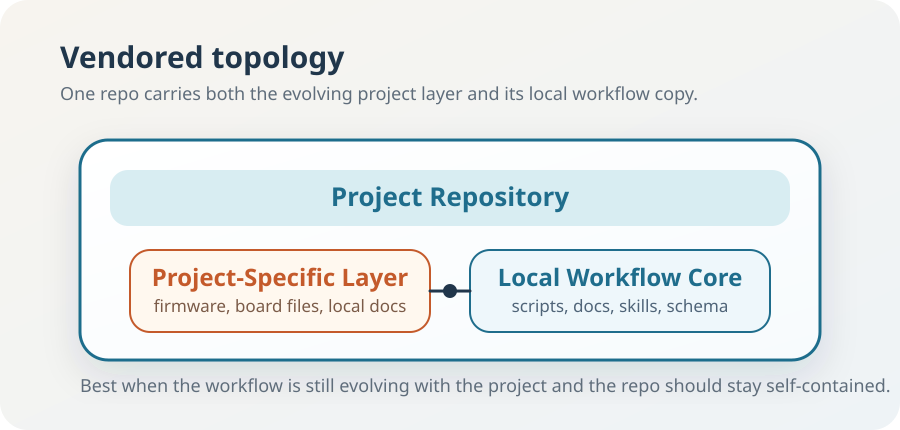
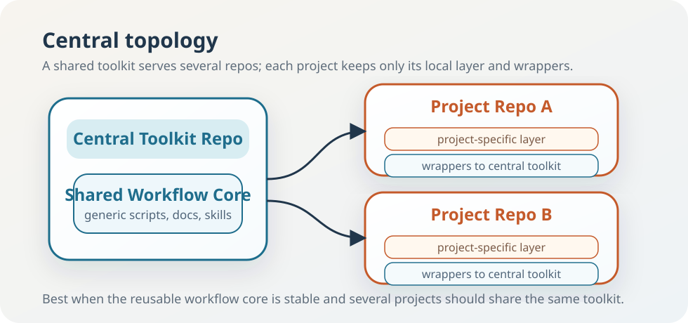

This manual is written for the person who wants to use STM32 AI Flow without first reverse-engineering the repository.
It explains the workflow as a human process, not just as a list of scripts.
Use this file when you are new to the starter kit, still deciding whether it fits your project, or want the fuller explanation before switching to the shorter operator handbook.
This manual is for the public starter-kit repo. It is not the maintainer-governance manual, and it is not written for a downstream test project that happens to exercise the workflow.
At a glance Use this manual for explanation, onboarding, and choice. Use
docs/user/handbook.mdfor the day-to-day operating path. Usedocs/user/understanding-ioc-and-cubemx.mdfor a focused guide to the role of.ioc, the role of CubeMX, workflow-side.iocchanges, and how to check integrity after a change. Usedocs/reference/workflow-safety.mdfor trusted-input and high-risk-action rules. Usedocs/user/simple-example.mdif you want the smallest realistic first bring-up on a real Nucleo board. Usedocs/user/project-case-study.mdif you want a larger case study of how one STM32 project can grow with this workflow. Usedocs/reference/workflow-scripts.mdonly when you need exact manual commands.
0A. The Shortest Reason To Try It
The value is not just that the agent can generate code.
The value is that this starter kit gives the agent a stable operating model:
- a reproducible
validate -> build -> flash -> verifyloop - a clear
.iocregeneration story - seeded continuity docs that survive between sessions in created projects
- evidence of what actually passed, failed, or was skipped
If you want the smallest practical proof first, read docs/user/simple-example.md.
If you only want one larger concrete proof that this is more than a documentation exercise, read docs/user/project-case-study.md. That example shows a real STM32 project growing from bring-up into:
- UART command and debug interfaces
- stepper motion control
- ADC plus DMA acquisition
- FreeRTOS integration
- USB binary control
- a desktop host UI
That is the kind of work this workflow is meant to support.
0. Who This Is For
This workflow is most attractive when:
- you want AI help, but you do not want the build/flash/validation procedure to live only in chat history
- your STM32 repo is expected to grow, regenerate from CubeMX, or be handed off later
- you want
.iocand generated-code discipline to stay explicit
It is less compelling when:
- the repo is a tiny disposable experiment
- you prefer completely ad-hoc prompts over repo-native workflow structure
- your project does not want a defined continuity pack or evidence trail
1. Why A Workflow Seed Exists At All
A new STM32 project rarely fails because the ideas are impossible. It usually struggles because the routine parts stay messy:
- machine setup is unclear
- build steps are copied by habit
.iocchanges are not kept in sync- successful runs are hard to reproduce
The starter kit exists to make that early stage calmer and more repeatable.
2. What This Seed Gives You
At a high level, it gives you:
- a compact command front door
- a default development loop
- a clear place for workflow evidence
- a disciplined approach to CubeMX-managed configuration
- a lightweight seeded continuity pack for new sessions and handoffs in created projects
It does not try to guess your application. It gives you structure, not your product logic.
2A. Why Not Just Use A Generic AI Assistant Directly
You can absolutely use a generic AI assistant with no starter kit.
The question is what you want to rediscover each time.
Without a workflow like this, the agent still needs to be taught:
- how build, flash, and validation fit together in this repo
- how
.iocis supposed to stay aligned with generated code - where evidence belongs
- how a later session reconstructs context without trusting memory
So the starter kit is not trying to replace AI assistance. It is trying to give that assistance a stable operating model.
2B. The Fastest First Win
If you want the quickest useful trial, do only this first:
- Clone the starter-kit repo and open it in your AI workspace.
- Create a new project repo from it.
- Save the new project's
.ioc. - Initialize workflow config from that
.ioc. - Run toolchain, config, and doctor checks.
If those pass, you already know something important before product code starts:
- the machine can run the workflow
- the repo startup path is coherent
.ioccan be made authoritative cleanly
3. Getting Started: What To Do First
This is the concrete startup path for a new user.
Before any "ask the agent" step, make sure the agent has a local repository to work in.
For this workflow, that usually means:
- Install the basic tools you need on the machine:
git- STM32CubeMX
- the STM32 build tools you plan to use
- Decide where your repos will live, for example
C:\work. - Open the relevant local repo in the AI workspace you are using so the agent can read files and run PowerShell commands there.
If you are using the reusable starter kit, keep one local clone of that kit on your machine. The starter-kit clone is the place where a brand-new project repo is created from.
Case A: You Do Not Have A Project Repo Yet
This means you are starting from the starter kit and creating a separate new project repo.
- Clone the starter-kit repo to your machine if you do not already have it.
- Open that starter-kit repo in your AI workspace.
- Ask the agent to create a new STM32 project repo from the starter kit in
centralorvendoredmode, under your chosen parent directory. - Open the new project repo in your AI workspace.
- In CubeMX, create the target project and save its
.iocinside the new repo. - Ask the agent to initialize workflow config from that
.ioc. - Add or generate the project-specific firmware tree and board files for your target if they are not already present.
- Ask the agent to check the toolchain, workflow config, and board visibility.
- Ask the agent to run a CubeMX smoke test if you want an early generated-code sanity check.
- Ask the agent to run the normal development workflow.
Important In CubeMX
Project Manager, chooseCMakewhen this workflow is expected to own the build path.
The important detail is easy to miss:
- the starter-kit clone is only the source used to create the new repo
- the new repo gets the workflow layer by default
- the new repo starts with its own git history instead of inheriting the starter-kit repo history
- project-specific assets such as firmware source, a board
.ioc, linker script, startup files, and host tools still need to be added intentionally for your own target
Typical prompts:
- "Create a new STM32 project from the starter kit under
C:\workin central mode." - "Create a new STM32 project from the starter kit under
C:\workin vendored mode." - "Initialize the workflow config from this
.ioc." - "Check the toolchain, config, and board connection."
- "Run the normal development workflow for this new project."
Case B: You Already Have A Repo With The Starter Kit In It
This means the starter export already happened and you are now working inside the new project repo.
- Open that project repo in your AI workspace.
- Create and save the project's
.iocif it does not exist yet. - Review and replace any placeholder project identity fields if they are still generic.
- Ask the agent to initialize workflow config from the
.ioc. - Add or generate the project-specific firmware tree if it is not present yet.
- Ask the agent to check environment and hardware visibility.
- Ask the agent to run the normal workflow.
Case C: You Are Adopting The Workflow In An Existing STM32 Repo
Do not start with a full build migration immediately.
- Clone the starter-kit repo locally if you do not already have it.
- Open your existing STM32 repo in your AI workspace.
- Ask the agent to bootstrap the workflow into the current repo from your local starter-kit clone.
- If the repo already has its own
AGENTS.md, merge the copiedstm32-workflow-agents-fragment.mdguidance instead of overwriting local policy blindly. - Generate workflow config from the existing
.ioc. - Point the workflow at the known-good artifact if needed.
- Run config validation and doctor preflight first.
- Run the workflow in non-invasive mode before attempting a broader migration.
For that path, read:
docs/guides/migrating-existing-cubeide-cubemx-projects.md
Coexistence with CubeIDE is supported.
A practical pattern is:
- keep the workflow for validation, build, flash, and evidence
- keep CubeIDE available for inspection and debug when it helps
- avoid maintaining two independent build systems unless you really need both
The One Rule That Is Easy To Miss
For a brand-new STM32 project, the first real project file is usually the .ioc.
That matters because this starter kit assumes .ioc is the source of truth for generated hardware and middleware configuration. If the .ioc does not exist yet, the workflow is not really initialized.
Important Treat
.iocas authoritative for generated configuration. Do not quietly hand-edit generated settings in source files and expect the workflow to stay coherent.
Where To Look For More Detail
docs/guides/cubemx-new-project-onboarding.mdfor the new-project pathdocs/guides/migrating-existing-cubeide-cubemx-projects.mdfor existing reposdocs/guides/workflow-topology.mdfor vendored versus central workflow layoutdocs/reference/workflow-safety.mdfor safe usage and trusted-input boundariesdocs/reference/workflow-scripts.mdfor exact manual commands
4. Why Use The Starter Kit Instead Of Starting From Scratch
You can absolutely start a new STM32 repo from scratch and rely on prompts alone.
The question is what you want to pay for: early structure now, or repeated rediscovery later.
If you start from scratch, the agent still needs to be taught:
- how build, flash, and serial checks should be arranged
- how
.iocis treated - where run evidence belongs
- how new sessions recover context
- which repo conventions are intentional and which are temporary accidents
The starter kit already carries that structure for you.
Side by side, the trade looks like this:
- Start from scratch:
- maximum freedom
- more prompt engineering
- more workflow decisions left implicit
- more chance of drift between sessions and repos
- Start from the starter kit:
- a little less freedom in workflow shape
- less repeated setup
- clearer validation and continuity rules
- easier reuse in the next STM32 project
The continuity part is explicit. Seeded downstream repos should keep a short current-state.md, a dated progress.md, durable defaults in session-memory.md, and only open decisions.md, open-issues.md, and board-notes.md when the task needs that extra detail.
The time savings usually come from avoided setup and avoided confusion, not from one magic command. In practice, a serious project often saves several hours to a couple of days at the start, then keeps paying back by reducing context rebuild later.
If the repo is a tiny disposable experiment, the starter kit may be more structure than you need. If the repo is meant to live, grow, regenerate from CubeMX, or be handed off later, starting from the starter kit is usually the cheaper choice.
4A. Core And Optional: What Stays Mandatory, What You Choose
The starter kit should not become a heavy framework.
So the split is intentional.
Core workflow:
- toolchain and config validation
- doctor preflight
.iocinitialization and consistency checks- build and flash
- reconcile after manual CubeMX generation
- seeded continuity docs and run evidence
Because this repo is the public starter kit, maintainers also keep packaging checks such as lint, starter export self-test, and hardware-light CI in place. Normal users can treat those as repo-level safeguards rather than as part of the daily inner loop.
Optional capabilities:
- serial validation
- live monitoring
- debug tooling
- IOC profile automation
- migration aids and other heavier helpers
Why keep the core small:
- it lowers startup friction
- it keeps docs and prompts shorter
- it avoids forcing one style of product architecture
Why keep the others optional:
- not every board exposes the same transports
- not every project needs the same debug surface
- every default capability becomes another thing to maintain and explain
The current optional set is intentionally an early curated set, not a claim that the starter kit already provides a broad finished catalog for every STM32 scenario. The core workflow is ready to use now, and optional capabilities are added deliberately as reusable patterns prove their value.
Choose only the core when you want the smallest stable path. Choose optional modules only when they remove work you are already repeating.
Important The default
flashstage requires a connected supported programming probe that STM32CubeProgrammer can see. In this workflow today, that means ST-LINK unless a project deliberately adds another flash path.Some STM32 projects may instead use the MCU's built-in bootloader over transports such as DFU, UART, or USB. That can be a valid project-specific workflow, but it is not the default flash path in this repo today.
The starter kit now also supports explicit gate policy in workflow config:
- strict gate behavior can block the run early when the flash probe or configured serial port is missing
- lenient gate behavior can report the same condition and skip that step cleanly for hardware-light runs
That policy lives in validation_policy in the workflow config instead of being left only to implicit profile behavior.
The starter kit now also supports suggestion-first HAL sync guidance:
scripts/stm32.ps1 hal-suggestinspects.ioc-enabled peripherals against the repo-local HAL driver tree, HAL config defines, and the CMake driver listreconcileand the normal workflow surface the same suggestions automatically before build- the workflow suggests exact
hal-synccommands without silently mutating the repo
Practical rule Start with the core only. Add optional modules one at a time, and only when they replace work you already do often enough to justify the extra surface.
4B. Vendored And Central: Two Ways To Carry The Workflow
There are two valid ways to organize the workflow layer.
vendored means the workflow core is copied into the same repo as the project.

central means the generic workflow core stays in one toolkit repo, while project repos keep only their local layer plus wrappers.

The practical difference is simple:
vendoredis easier when the workflow is still evolving with the projectcentralis better when the shared core is already stable and several projects should use the same toolkit
The important nuance is that project-specific growth still happens in both models. Topology changes where the reusable core lives. It does not mean every project need should be pushed into the shared core.
What the topology choice does not mean It does not mean the shared core should absorb product code, board-specific assumptions, or every local convenience. Project growth still belongs in the project repo.
5. What You Should Remember
This starter kit is repo-based, not editor-specific.
This starter kit was developed and tested mainly with VS Code and the Codex extension. However, it is not tied to any specific editor, agent environment, or exact model. It is still intended primarily for Windows today.
It should work in other agent environments when they can:
- read the repo
- run the workflow scripts
- edit files safely
- follow repo-native instructions such as
AGENTS.md
If an environment is chat-only and cannot inspect files or run commands, only the documentation part transfers cleanly, not the full workflow behavior.
What Is Windows-Specific Today
- prerequisite auto-install currently depends on
winget - board and serial discovery rely on Windows device queries
- many examples assume
COMport names - styled PDF export currently assumes Microsoft Edge
How hard is porting to other platforms like Linux or macOS:
- build-oriented core workflow: moderate
- full workflow parity: harder, but still realistic if the kit is refactored on purpose
The main work is not rewriting the workflow idea. It is replacing the Windows-first install, discovery, and export assumptions with cross-platform equivalents.
What About Other Microcontroller Families
This starter kit is implemented for STM32 today.
That means the current configuration and generation path is built around:
- STM32CubeMX
.iocas the configuration source of truth- STM32-oriented toolchain, build, flash, and validation scripts
The underlying workflow principles are broader than STM32:
- a clear configuration authority
- a reproducible build/flash/validate path
- repo-native continuity between sessions
- honest run reporting
So yes, the same general approach could be adapted to another microcontroller family. The main work would be replacing the STM32-specific adapter layer with equivalents for that ecosystem. In practice, that is easiest when the target platform has a stable project/configuration artifact comparable to STM32 .ioc.
You Do Not Need To Memorize The Scripts
You are not expected to memorize every script in the repo.
The normal entry point is the agent itself. In ordinary use, say what you want in plain language.
Good examples:
- "Check whether this machine can run the STM32 workflow."
- "Initialize workflow config from my
.ioc." - "Run the normal development workflow for this project."
If you want a compact guide for writing more useful prompts in this workflow, read docs/user/agent-communication-guide.md.
For safe usage guidance about untrusted content, prompt injection, and high-risk actions, read docs/reference/workflow-safety.md.
Still unsure? Ask the agent directly before guessing. Example: "This part of the workflow is unclear to me. Explain how it works in this repo and what I should do next."
That is enough to get real work done.
CubeIDE can coexist with this starter-kit workflow.
The cleanest version is usually:
- workflow/CMake owns the build outputs
- CubeIDE is used as a debug and inspection front end
.iocremains the source of truth for generated configuration
Git hosting is not fixed to GitHub.
The starter kit includes a GitHub Actions workflow because it is a practical default, but the real behavior is driven by local scripts. So a downstream repo hosted on GitLab, Gitea, Bitbucket, Azure DevOps, or a private git server can still use the same workflow. Usually only the hosted CI wrapper needs to be adapted.
6. What A Normal First Run Looks Like
Step 1: Check The Environment
Ask:
- "Check whether the machine and board are ready for the STM32 workflow."
This answers a simple question: can this machine and this board even support the workflow right now?
Step 2: Initialize Config From .ioc
Ask:
- "Initialize workflow config from this
.iocand show me anything I should edit."
This is the cleanest starting point for a CubeMX-managed project.
Step 3: Run The Default Development Loop
Ask:
- "Run the normal development workflow for this project."
That is the normal "do the sensible thing" command.
7. What The Workflow Actually Does
When you run the main loop, the starter kit typically:
- validates tools
- validates workflow config
- regenerates from CubeMX if configured
- builds firmware
- flashes the board if enabled
- runs serial validation if enabled
- writes evidence artifacts
The point is not to hide steps from you. The point is to stop relying on memory and improvisation.
If a step was skipped because a validation gate chose skip, that should be reported explicitly rather than being mistaken for a full pass.
8. Why .ioc Matters So Much
In CubeMX-managed projects, .ioc is not just another file. It is the place where generated hardware and middleware configuration is supposed to come from.
That is why the workflow prefers:
.iocfirst- regeneration second
- custom behavior in USER CODE blocks or separate modules
- running the repo reconcile step before build/flash if code was generated manually in CubeMX
Most important habit Edit
.iocfirst, then regenerate or reconcile, then build. Reversing that order is one of the fastest ways to create drift.
This may feel strict at first, but it saves time later.
The practical version is:
- edit and save
.iocin CubeMX - generate code in CubeMX if you want to work there directly
- run
powershell -NoProfile -ExecutionPolicy Bypass -File scripts/stm32.ps1 reconcile -ConfigPath .\stm32-workflow.local.json - then build or run the normal workflow
That works because CubeMX keeps ownership of generated scaffolding, while the project keeps real behavior in modules and thin USER CODE trampolines.
The reconcile step should be reviewable, not mysterious. It now tells you which generated files changed, which workflow-owned USER CODE sections were restored, and whether the .ioc check still reports warnings or errors.
9. Optional Modules Are Optional On Purpose
The starter kit supports extra capabilities such as serial checks, monitoring, CubeMX automation, and reusable IOC profiles.
These are useful, but they are not the main story.
Treat the current list as a carefully curated early set of supported extensions. It is meant to be useful today without pretending to cover every possible STM32 project need already.
The main story is still a stable loop:
- validate
- build
- flash
- verify honestly
Everything else should earn its place.
The core workflow is the default starting point. Additional capabilities only matter where the project clearly benefits from them.
Good default If you are uncertain whether a helper belongs in the workflow, leave it out until a real repeated task proves that it should exist.
10. What Makes A Good Success Claim
"The build passed" is not the same as "the workflow succeeded."
A useful report tells you:
- what passed
- what was skipped
- what was blocked
- where the evidence was written
That is one of the quiet strengths of the starter kit.
11. Which Documents To Read Next
If you want the operator's view:
docs/user/handbook.mddocs/user/understanding-ioc-and-cubemx.mddocs/reference/optional-modules.mddocs/user/agent-communication-guide.mddocs/user/simple-example.mddocs/user/project-case-study.mddocs/pdf/handbook.pdf
If you want the exact command mapping:
docs/reference/workflow-scripts.md
If you want the action-risk policy:
docs/reference/workflow-safety.md
If you want a styled printable copy:
docs/pdf/user-manual.pdfdocs/pdf/simple-example.pdfdocs/pdf/project-case-study.pdf
If you want the CubeMX and generated-code rules:
docs/reference/cubemx-user-code-contract.md
If you want migration guidance for an existing project:
docs/guides/migrating-existing-cubeide-cubemx-projects.md
12. Final Advice
Use the starter kit to keep the basic loop sane.
Do not try to enable everything at once. Do not treat every helper as mandatory. Do not confuse more automation with better engineering.
The starter kit is most useful when it stays understandable.
If you are trying this workflow and want help using it or adapting it to a real STM32 project, open a GitHub Discussion in this repository.